x-mintkey-stability: experimental) ·
this page is a guided tour; source of truth is the markdown under
docs/architecture/
Mintkey's architecture is documented under
docs/architecture/.
This page is a guided tour of that documentation.
The source of truth is the markdown; this HTML is a rendered summary.
A black-box view of Mintkey in its environment: who interacts with it, and which external systems it depends on. Three distinct trust zones exist: Operator (high trust, attributed), Agent (low trust, contained), Backend (Mintkey authenticates to it as the service's intended client).

| Actor / System | Type | Role |
|---|---|---|
| Operator | human | Configures services, credentials, agents, and permissions via Admin Console. |
| Agent Operator | human | Creates agents, retrieves Agent API Keys, sets up integrations on behalf of agents they own. |
| Agent | machine | Authenticates with Agent API Key; uses MCP to discover services; calls backends through the Egress Proxy. |
| Backend Services | external | The APIs Mintkey brokers access to. Mintkey forwards authenticated requests on the agent's behalf. |
| External KMS | external | Holds the KEK; performs encrypt/decrypt of DEKs at the security boundary. |
| Identity Provider | external, optional | Federates Operator login (OIDC/SAML). Default: Keycloak in the compose stack. |
| OTel backends | external | Receive OTLP traces/metrics/logs. Default: Jaeger + Prometheus + Grafana in compose. |
Mintkey is organized as a two-plane separation: a control plane (low-traffic, high-trust) and a data plane (high-traffic, latency-sensitive). This lets each plane have different SLOs (control plane 99.5% / data plane 99.9%) and different scaling and deployment cadences.

| Container | Technology | Responsibility | ADRs |
|---|---|---|---|
| Admin Console (Web UI) | AdminJS (Node.js) | Renders screens for service registration, credential management, agent management, permission grants, audit viewing. Talks only to the Admin REST API; holds no DB connection. | ADR-0013, ADR-0019 |
| Admin REST API + BFF | Python / FastAPI | HTTP surface for both the Admin Console and machine-friendly REST access. Orchestrates Identity, Vault Adapter, Audit, and DB. Every state change emits an audit event. | ADR-0005, ADR-0014 |
| Identity and Authorization | Python (embedded in Admin API) | Source of truth for Operator, Agent, Permission Grant. Verifies Operator sessions and Agent API Keys (hash compared). Enforces RBAC on operators and ABAC on agents. | ADR-0008, ADR-0018 |
| MCP Server | Python / Anthropic Python SDK | Speaks Model Context Protocol to agents. Exposes list_services, describe_service, get_openapi, request_token tools. |
ADR-0009 |
| Credential Broker | Go | Mints short-lived, scope-bound, audience-bound JWTs (JWS Ed25519). Holds the signing private key. Publishes JWKS for the Egress Proxy. | ADR-0006, ADR-0011 |
| Vault Adapter | Go | Encapsulates credential storage with a uniform put/get/rotate interface. v1: encrypted file (AES-256-GCM, envelope). v2: HashiCorp Vault. v3: SQL + external KMS. |
ADR-0003, ADR-0011 |
| Audit Service | Go (embedded in broker) / Python (admin API) | Append-only event sink. Records credential CRUD, token issuance, token use, permission grant/revoke, login. Hash-chained per tenant for tamper evidence. | ADR-0014.7 |
| Kong-syncer | Go | Pushes declarative YAML to Kong's /config endpoint on operator events (service/credential changes). Listens via Postgres LISTEN/NOTIFY. |
ADR-0010 |
| PostgreSQL | Postgres 15 | Durable store for config, identities, permissions, audit. Row Level Security on every tenant-scoped table. Schema owned by Liquibase. | ADR-0008, ADR-0015 |
| Container | Technology | Responsibility | ADRs |
|---|---|---|---|
| Egress Proxy | Kong Gateway (DB-less) + Go plugin (go-pdk) | Validates JWT, looks up service, retrieves credential via Vault Adapter, injects credential into outbound request, forwards to backend, scrubs credential from response. Stateless; horizontally scalable. | ADR-0004, ADR-0007 |
Seven sequence flows cover the complete operational surface. Each flow is a Mermaid sequence diagram with pre/post conditions and per-phase detail.
| Flow | Description |
|---|---|
| E2E-01 | Builder happy path — end-to-end demo from docker compose up through agent proxied call with full observability. The headline smoke test. |
| F-OP-01 | Bootstrap and operator login — seed-job, Liquibase, Keycloak realm import, first admin session. |
| F-OP-02 | Register a service — operator registers a backend service with its base URL and auth scheme. |
| F-OP-03 | Register a credential and test-run — operator stores a credential and verifies the proxy can call the backend with it. |
| F-OP-04 | Create an agent and grant permissions — operator creates an agent identity and grants it per-service, per-action permissions. |
| F-AG-01 | Agent discovers services and requests a token — agent authenticates with Agent API Key, calls MCP discovery tools, calls request_token. |
| F-AG-02 | Agent brokered call happy path — agent presents JWT to the Egress Proxy; proxy validates, injects credential, forwards, returns response. |
All 19 ADRs have status Accepted. ADRs are immutable once accepted; corrections are recorded in new ADRs that supersede or amend the old. (ADR-0001)
| ADR | Title | One-sentence summary |
|---|---|---|
| ADR-0001 | Record architecture decisions | Nygard-format ADRs at docs/architecture/01-architecture/adr/ are the record for all architectural decisions; immutable once Accepted. |
| ADR-0002 | Adopt "Mintkey" as the product name | The product is named Mintkey; ULID prefix registry and API path prefix /v1/ derive from this. |
| ADR-0003 | Credential storage — pluggable adapter; v1 = encrypted file | Credentials are stored via a pluggable Vault Adapter; v1 is AES-256-GCM envelope encryption on an externally mounted volume. |
| ADR-0004 | Egress Proxy — Kong Gateway (DB-less) + Go plugin via go-pdk | The Egress Proxy is Kong Gateway in DB-less mode with a custom Go plugin for credential injection; Envoy + ext_authz is the documented upgrade path. |
| ADR-0005 | Admin REST API (Python + FastAPI), Admin UI (AdminJS), Postgres + Liquibase | Admin REST API is Python/FastAPI; Admin UI is AdminJS; schema migrations are Liquibase; operator auth default is Keycloak OIDC. |
| ADR-0006 | Token format and binding — JWS Ed25519 + fast revocation channel | Brokered tokens are JWS over EdDSA (Ed25519) with claims {sub, aud, scope, jti, iat, exp, tnt}; revocation propagates via Postgres LISTEN/NOTIFY. |
| ADR-0007 | Proxy deployment topology — explicit forward proxy + per-service virtual-host alias | Agents send requests to http://<service-alias>.proxy.mintkey.local/; Kong routes by virtual host; this is explicit, not transparent. |
| ADR-0008 | Multi-tenancy — row-level isolation by default, DB-per-tenant opt-in | Default isolation is Postgres RLS on every domain table with tenant_id column; DB-per-tenant is an opt-in high-isolation tier. |
| ADR-0009 | MCP Server stack — Python + Anthropic Python SDK | MCP Server is Python using the Anthropic Python SDK; shares the FastAPI process boundary with the Admin API for the MVP. |
| ADR-0010 | Change channel transport — Postgres LISTEN/NOTIFY | The revocation and config-change channel uses Postgres LISTEN/NOTIFY; no message broker introduced for the MVP. |
| ADR-0011 | Shared Go stack for Broker, Vault Adapter, Kong-syncer, and Egress Proxy plugin | Credential Broker, Vault Adapter, Kong-syncer, and Egress Proxy plugin share a Go module with a single go.mod. |
| ADR-0012 | Python stack pin for Admin REST API and MCP Server | Python 3.12 is pinned; dependency versions are locked in requirements.txt files; reproducible builds enforced. |
| ADR-0013 | AdminJS pin set for the Admin Web UI | AdminJS version and its adapter set are pinned; amended by ADR-0019 (AdminJS is now a pure BFF with no DB adapter). |
| ADR-0014 | Iteration 1+2 corrections from adversarial review | Thirteen narrow corrections including span-attribute allowlist, plaintext-credential chokepoint formalization, audit hash-chain genesis value, and CSRF double-submit pattern. |
| ADR-0015 | Liquibase is the source of truth for the database schema | Liquibase changelogs are the canonical schema; SQLAlchemy models are generated mirrors; no column is ever added in SQLAlchemy first. |
| ADR-0016 | Round-2 corrections from second adversarial pass | Adds jti denylist for token replay prevention, AdminSettings schema, and defers 14 medium-severity items to open questions. |
| ADR-0017 | Round-3 corrections from multi-perspective contract review | Twelve wire-level decisions including ULID prefix registry (^<prefix>_[0-9A-HJKMNP-TV-Z]{26}$), span-attribute explicit allowlist, and mintkey error code enum. |
| ADR-0018 | Classical service API keys for non-agent clients | Non-agent clients use static mk_svckey_-prefixed API keys (Argon2id-hashed at rest, returned plaintext exactly once); Egress Proxy distinguishes these from brokered JWTs by prefix. |
| ADR-0019 | AdminJS is a backend-for-frontend over the admin-api REST API; write authentication | AdminJS holds no DB connection; all data access relays via the Admin REST API; writes require both a mintkey_session cookie and an Ed25519 AdminUiSignedRequest JWT. |
Read the source: docs/architecture/01-architecture/adr/README.md
Quality attributes are documented as SEI ADD-format scenarios with measurable response measures. Each becomes either an SLO or a test assertion. (source: 03-quality-attributes.md)
| Scenario | Measure |
|---|---|
| S-SEC-1 — Agent never holds a usable backend credential | In any successful brokered request, the original credential is never serialized into a response visible to the agent and never present in any log emitted by any container the agent can reach. |
| S-SEC-2 — Credentials at rest are encrypted | Substrate reveals only ciphertext to an attacker who can read storage but not the KEK. v1 backend: documented limitation (co-located KEK); v2/v3: KMS-rooted. |
| S-SEC-3 — Stolen Agent API Key has bounded blast radius | 0 unauthorized service calls succeed in fuzzing tests; revoke-to-deny propagates within ≤5 s. |
| S-AUD-1 — Every issuance and use is logged | 100% coverage in integration tests; audit query for any 1h window returns within ≤2 s. |
| S-PERF-1 — Proxy latency overhead is bounded | p50 added latency ≤10 ms; p99 added latency ≤30 ms under 100 RPS sustained per proxy instance. |
| S-PERF-2 — Token issuance is fast | p99 ≤50 ms at 100 issuances/sec. |
| S-OPS-1 — Operator can revoke an agent in seconds | End-to-end deny within ≤5 s of revoke click; proxy must check liveness, not just JWT expiry. |
| S-OPS-2 — Rotate backend credential without agent changes | 100% of proxy hits within ≤30 s after rotation use the new credential; zero failures attributable to the rotation. |
| S-OBS-1 — One agent request traceable end-to-end | ≥95% of proxy hits have a complete trace; lookup by correlation ID returns within ≤3 s. |
| S-MOD-1 — Adding a new backend auth scheme is small and local | Change touches ≤3 files in the Proxy and ≤2 in the Vault Adapter; no contract changes for existing schemes. |
| S-AVAIL-1 — Control plane downtime does not stop in-flight agent work | 0 agent-visible failures attributable to control plane outage if agents have ≥30 s remaining on their JWTs. |
| S-MT-1 — Strict tenant isolation | Integration test fuzzes API endpoints with cross-tenant IDs and asserts 0 leakage; RLS covers 100% of domain tables (asserted by architecture test). |
| S-TEST-1 — E2E smoke passes in CI in ≤90 s | Full stack-up + test passes in ≤90 s; all quality scenarios exercised by at least one CI test. |
Mintkey is multi-tenant by architecture, single-tenant by default.
A single instance can host multiple tenants concurrently; the default
docker compose up creates one tenant (t_default)
and the UI hides tenant selection so a single-tenant operator never sees
the concept.
(02-product-vision.md)
Default isolation is row-level (tenant_id column on every
domain table + Postgres Row Level Security). An opt-in DB-per-tenant mode
is available for high-isolation deployments.
Full specification: P-007-multi-tenancy.md · ADR-0008 · ADR-0014.8 · ADR-0016.3
Five canonical contract files. CI diffs the running services against these on every commit. Code is not allowed to drift from them. (contracts/README.md)
| Contract | Format | What it governs |
|---|---|---|
| contracts/rest/openapi.yaml | OpenAPI 3.1 | Admin REST API surface. Canonical source for error codes (mintkey:code), ULID patterns, auth schemes. x-mintkey-stability: experimental. |
| contracts/mcp/tools.yaml | YAML (MCP tool catalog) | MCP tool definitions for list_services, describe_service, get_openapi, request_token. |
| contracts/events/audit-event.schema.json | JSON Schema Draft 2020-12 | Audit event envelope: every state change the audit service records. |
| contracts/events/change-event.schema.json | JSON Schema Draft 2020-12 | Change-channel event (Postgres LISTEN/NOTIFY payload for Kong-syncer and revocation propagation). |
| contracts/vault-adapter/vault.proto | Protocol Buffers | Vault Adapter gRPC surface. AuthScheme enum is the canonical list of supported auth schemes. |
| contracts/events/span-attributes.md | Markdown allowlist | Explicit allowlist of OTel span attribute names. Attributes not on this list must not appear in any span. Asserted by CI. |
Architectural uncertainties that are not yet resolved into ADRs or proposals are tracked as numbered open questions. This is where honest "we don't know yet" lives.
Phase 1 is complete as of 2026-05-12:
This is pre-alpha software. The wire surface is declared
x-mintkey-stability: experimental in
openapi.yaml.
Breaking changes will bump the major version.